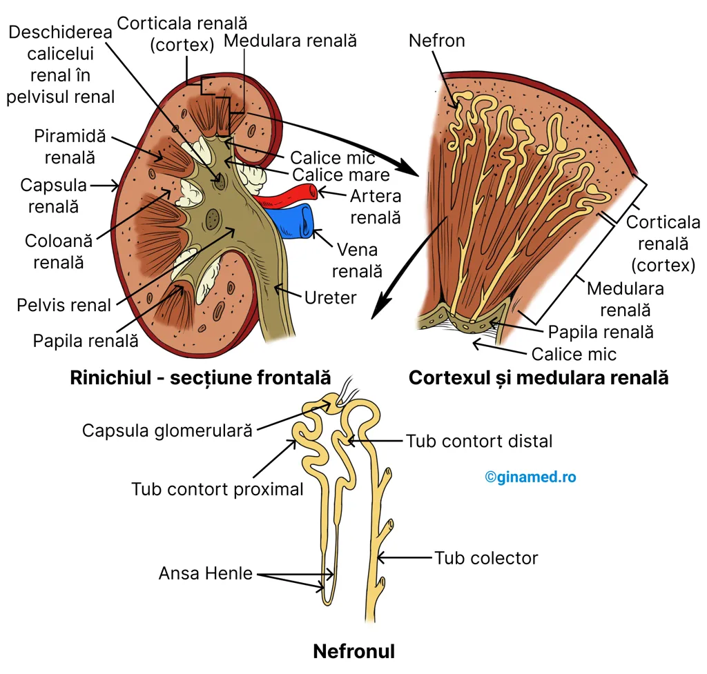
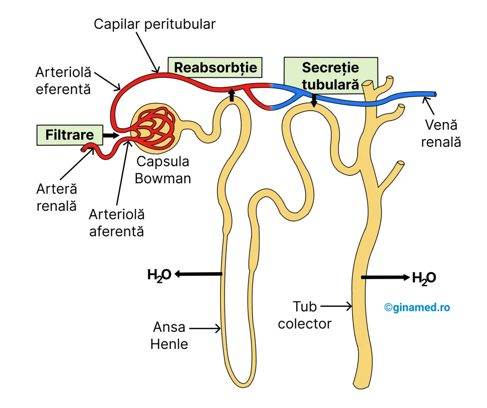
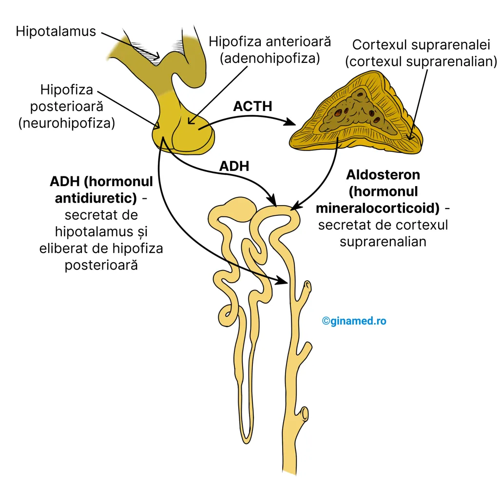
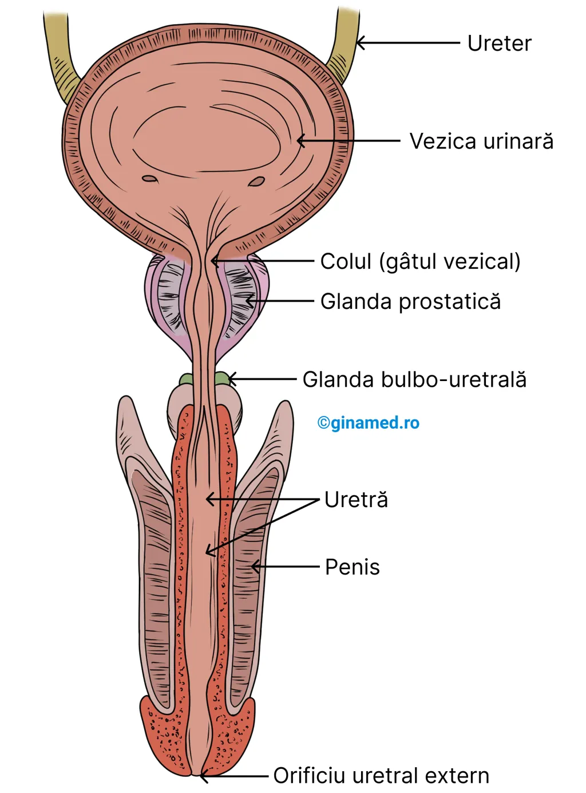

🫘 Capitolul 20 – Sistemul Urinar
Ghid complet pentru admiterea la Medicină – Barron's Biologie, Capitolul 20: Sistemul Excretor.
Harta capitolului
Funcții sistem urinar · Caracteristici rinichi · Structura internă · Nefronul
Structura nefronului · Filtrare · Reabsorbție · Mecanism contracurent · Secreție tubulară
ADH · Aldosteron · Compoziția urinei · Caracteristici fizice
Uretere · Vezică · Uretră · Ficat · Plămâni · Intestin · Piele
Flowchart animat · 5 etape · Detalii complete + De ce?
25 întrebări tip grilă · Explicații complete · Analiză progres
Rezumat rapid pentru examen
- Funcția principală: reglarea compoziției lichidelor extracelulare
- 4 roluri rinichi: volum plasmă, concentrație deșeuri, electroliți, pH
- Nefron: unitate funcțională; >1 milion/rinichi; 3 procese: filtrare, reabsorbție, secreție
- RFG: bărbați 125 mL/min, femei 105 mL/min; total 7,5 L plasmă/oră
- TCP: reabsorbție Na⁺ (activ) → Cl⁻ (facilitat) → H₂O (osmoză); glucoză + aminoacizi (activ)
- Ansa Henle: desc. = permeabilă la H₂O; asc. = impermeabilă la H₂O, reabsoarbe NaCl activ
- Mecanism contracurent: NaCl → interstițiu hiperton → atrage apa din ramura desc. + tub colector
- ADH: hipotalamus → hipofiză post. → ↑ permeabilitate tub colector → ↑ reabsorbție H₂O
- Aldosteron: cortex suprarenal → ↑ Na⁺ reabsorbit în TCD → ↑ H₂O; ↑ K⁺ secretat
- Fără aldosteron: tot K⁺ reabsorbit → insuficiență cardiacă; insuficiență = Boala Addison
- Urină: 95% H₂O, pH 4,6–8,0 (medie 6,0), densitate 1015–1020, 1–2 L/zi
- Uree: din dezaminarea aminoacizilor în ficat (ciclul ornitinei)
- Hematurie (urină roșie): eritrocite traversează glomerulul deteriorat
🔄 Fluxul complet al urinei
🫘 Introducere & Rinichii
Funcțiile sistemului urinar, caracteristicile rinichilor și structura lor internă.
Introducere

Principala funcție a sistemului urinar este de a regla compoziția și concentrația lichidelor extracelulare, denumite lichide interstițiale, cum sunt plasma și fluidele tisulare. Îndeplinirea funcției sistemului urinar se face prin procesul de formare a urinei din plasma sanguină. Acesta se desfășoară la nivelul rinichilor și al altor organe asociate.
În cursul procesului de formare a urinei, rinichii au următoarele roluri:
de a regla volumul plasmei sanguine, contribuind totodată la reglarea presiunii sanguine;
de a controla în ce concentrație se găsesc produșii de degradare din sânge;
de a regla concentrația electroliților plasmatici (inclusiv a ionilor de sodiu, potasiu, carbonați, bicarbonați);
contribuie la menținerea echilibrului acido-bazic din plasmă (pH-ul).
Rinichii
Rinichii – caracteristici:
- sunt organe pereche;
- sunt dispuși pe peretele abdominal posterior, retroperitoneal (în exteriorul peritoneului);
- sunt în laterala coloanei vertebrale, de o parte și de alta a ei;
- susținerea în poziție revine țesutului adipos și conjunctiv;
- rinichiul drept este situat puțin mai jos față de cel stâng;
- la adult: 1 rinichi = 175 g (în medie); mărimea aproximativă unui pumn.
Rinichiul este protejat la exterior de o capsulă alcătuită din țesut fibros de culoare albicioasă. Pe partea medială a rinichiului, la exteriorul său se remarcă o depresiune concavă, denumită hil (locul de intrare al arterei renale și de ieșire pentru vena renală și pentru ureter). După procesul de formare a urinei în fiecare rinichi, aceasta este eliberată în pelvisul renal (organ cavitar). Mai departe, urina trece printr-un tub lung, denumit ureter, după care se varsă în vezica urinară.
↘ Intră: artera renală
↗ Ies: vena renală + ureter
Pelvis renal → Ureter → Vezică urinară
La nivelul rinichiului, prin secțiune frontală, se remarcă două zone diferite:
Vascularizația rinichiului este asigurată de artera renală (intră în rinichi) și vena renală (iese din rinichi) la nivelul hilului.

Nefronul
Unitatea funcțională și structura rinichiului la nivelul căreia se desfășoară formarea urinei se numește nefron. Fiecare rinichi conține peste un milion de nefroni. În alcătuirea unui nefron intră:
– care transportă sânge;
– care transportă un fluid – filtratul; acesta derivă din plasmă și se obține în urma procesului de filtrare glomerulară; după pătrunderea sa în tubi, filtratul trece prin procese de reabsorbție a substanțelor necesare organismului și de excreție a celor inutile. La finalul modificărilor suferite, filtratul rezultat constituie urina, care va fi preluată ulterior de tubul colector. Acesta colectează urina de la mai mulți nefroni din zonă.
Sistemul de tubi coboară în medulara renală după care se întoarce în cortexul renal. La acest nivel, sistemul de tubi se unește cu tubii colectori care se deschid ulterior în calicele mici prin intermediul papilelor renale.
Vascularizația rinichiului este asigurată de către artera renală care se divide ulterior în artere de dimensiuni mai mici care se vor distribui medularei renalei și apoi cortexului renal. Arterele mici care pătrund în cortex se divid în numeroase arteriole aferente care pot fi observate doar la microscop.
🔬 Nefronul – Structura și Procesele
Structura nefronului, filtrarea glomerulară, reabsorbția, mecanismul contracurent și secreția tubulară.
Structura nefronului
Terminația arteriolelor aferente microscopice este reprezentată de o rețea de capilare, denumită glomerul, prezent la nivelul fiecărui nefron. Plasma sanguină din glomerul va traversa pereții permeabili ai capsulei glomerulare (Bowman) în care se află glomerulul și pe calea arteriolei eferente, sângele va ieși din glomerulul renal. Ulterior, arteriola eferentă formează o rețea de capilare denumită rețeaua capilarelor peritubulare care se distribuie în jurul tubilor nefronului. Aceste capilare peritubulare se varsă în vene mici, din a căror unire rezultă vene mai mari care vor forma ulterior vena renală, care drenează sângele din rinichi.
Structurile din alcătuirea unui nefron sunt:
La nivelul nefronului se desfășoară 3 procese care duc la formarea urinei:

Filtrarea
Filtratul derivat din plasma sanguină traversează fante submicroscopice și pătrunde în capsula Bowman. Procesul care facilitează trecerea substanțelor dizolvate alcătuite din molecule mici și a apei, din capilarele glomerulare în capsula glomerulară Bowman, se numește filtrare. Cauzele care permit realizarea filtrării sunt:
În filtrat ajung ioni și molecule mici (de exemplu, glucoza), iar în sânge rămân celulele sanguine și moleculele mari (de exemplu, proteine).
ioni, molecule mici (ex. glucoza)
celule sanguine, molecule mari (ex. proteine)
Procesul de filtrare se desfășoară în glomerul și capsula glomerulară.
Capacitatea de filtrare a glomerulilor este de circa 7,5 L plasmă sanguină/oră. Filtratul care ajunge în interiorul capsulei glomerulare se numește filtrat glomerular. Rata de filtrare glomerulară diferă în funcție de sexe:
la bărbați
la femei

Reabsorbția
Din capsula glomerulară, filtratul ajunge în lumenul (interiorul) tubului contort proximal. Pereții tubului prezintă milioane de microvilozități care îi măresc considerabil suprafața de contact. Procesul de reabsorbție se desfășoară la nivelul tubului contort proximal, în cursul căruia, cantități variabile de apă, săruri și alte molecule din lumen, traversează celulele epiteliale tubulare și ajung în capilarele peritubulare. De la acest nivel, sângele este drenat mai departe într-o venă.
În general transportul moleculelor este specific justificat de transportorii membranari specifici implicați în realizarea lui. Substanțele sunt transportate în exteriorul celulelor tubulare (și ulterior în sângele din capilarele peritubulare) prin intermediul proteinelor transportoare specifice de la nivelul membranelor celulare. Prin transport activ, deci cu consum de ATP ca sursă de energie, se reabsorb glucoza și aminoacizii.

Reabsorbția sărurilor și a apei
În tubul contort proximal se reabsorb sărurile și apa, însă printr-un mecanism diferit. Astfel, etapele ar fi:
În urma reabsorbției pasive și selective din tubul contort proximal, cea mai mare parte a apei, nutrienților, sărurilor și ionilor, de care are nevoie organismul, ajung din nou în sânge. Ceea ce rămâne în filtrat constituie în mare parte deșeurile azotate produse de corp, alături de o parte din apă, ioni, săruri.
Din tubul contort proximal, filtratul glomerular își continuă traseul prin ramura descendentă a ansei Henle, care coboară și pătrunde profund în medulară, la nivelul căreia se află ansa Henle propriu-zisă. De aici, fluidul își continuă traseul prin ramura ascendentă a ansei Henle, care din medulară, urcă spre cortex.
Cantități foarte mici de apă (sau chiar deloc) se reabsorb din ramura ascendentă a ansei Henle și din tubul distal, deoarece sunt permeabili pentru sodiu și clor (îi reabsorb) și impermeabili pentru apă – mecanism contracurent. (Completare: Mecanismul descris anterior prin care acumularea de ioni de sodiu și de clor din medulara renală, favorizează ieșirea apei din ansa Henle (ramura descendentă și ansa propriu-zisă) se numește mecanism contracurent (al circulației apei).)
Unii compuși reziduali azotați, în mod special ureea, înainte de a fi eliminați din organism, sunt reabsorbiți în zona profundă a tubului colector, care se află în medulară. Acest lucru crește concentrația de molecule organice din medulară care va determina reîntoarcerea ureei în ansa Henle și ulterior ajunge în tubul colector. Desfășurarea acestor procese din ansa Henle au ca scop reintrarea apei de la nivelul tubilor în circulația sanguină, prin intermediul capilarelor peritubulare. În acest fel, prin pierderea de apă, fluidul rămas în nefron va fi concentrat și va deveni urină.
Din ansa Henle, filtratul glomerular își continuă traseul prin tubul contort distal la nivelul căruia sunt continuate anumite procese inițiate în tubul contort proximal, prin care apa și sărurile sunt reabsorbite în sânge. Mecanismele sunt similare, ionii de sodiu părăsesc fluidul din tubi prin proces activ, urmați de ionii de clor și apoi apa prin proces pasiv.
Procesul de reabsorbție selectivă se întâlnește la nivelul tubului contort proximal, distal și ansei Henle, cu rolul de a recupera nutrienți, săruri, apă. Procesul de reabsorbție selectivă de la nivel renal transportă substanțe în capilarele peritubulare pentru a le întoarce în curentul sanguin.

Secreția tubulară
În tubul contort distal se desfășoară un proces activ prin care compuși chimici prezenți în capilarele sanguine peritubulare sunt transportați (excretați) în interiorul tubului contort distal, intrând în alcătuirea filtratului glomerular. Acest proces poartă numele de secreție tubulară.
Molecule secretate tubular sunt:
| Moleculă secretată | Detaliu |
|---|---|
| Acid uric | — |
| Creatinina | — |
| Ioni de hidrogen | secretat activ în tubul contort distal - se vede pe figura 20.5 |
| Amoniac | secretat activ în tubul contort distal - se vede pe figura 20.5 |
| Antibiotice | penicilina |
Secreția tubulară se desfășoară în tubul contort distal și tubul colector, iar pe lângă procesul de excreție a variaților compuși, aceasta schimbă totodată concentrația ionilor cu scopul de a menține homeostazia sângelui.
Urmarea proceselor desfășurate în tubul contort distal constau în transformarea filtratului glomerular în urină, care va intra ulterior în tubul colector (Completare: Deci pot numi "filtrat glomerular" lichidul care ajunge în tubul contort distal). Pentru a ajunge la pelvisul renal, tubul colector coboară din cortex în medulară și aici străbate mediul salin de la nivelul interstițiului medular. Caracterul hiperton al acestuia atrage apa (prin osmoză) din tubii colectori în capilarele sanguine și în vasele limfatice, care o vor distribui ulterior în circulația sanguină. Prin acest proces se finalizează întoarcerea apei în sânge.
La nivelul rinichilor are loc și procesul de excreție care constă în eliminarea urinei din tubul colector în pelvisul renal, transportul acesteia la uretere, vezica urinară, uretră și în final eliminarea ei din organism. Astfel, sunt implicați: tubul colector, pelvisul renal și organele accesorii ale excreției: uretere, vezica urinară și uretră.
🧬 Activitatea Hormonală & Urina
ADH, Aldosteron și compoziția completă a urinei.
Activitatea hormonală
În determinarea ratei absorbției apei de la nivelul tubului contort distal și a tubului colector intervine permeabilitatea membranei celulelor care alcătuiesc peretele tubului colector. Controlul asupra acesteia este exercitat de ADH – hormon antidiuretic, sintetizat de hipotalamus și eliberat de către hipofiză, partea de lob posterior. Caracterul complex al mecanismului chimic ce determină deschiderea porilor membranei celulare sub influența ADH-ului, favorizează trecerea apei în sânge.
Secreția de ADH este stimulată atunci când receptorii chimici din hipotalamus (chemoreceptorii) sunt stimulați de variațiile concentrației de sodiu sau a altor ioni în sânge.
↑ concentrație ioni → stimul pentru hipotalamus → sintetizează ADH → ↑ permeabilitate perete tub colector → absorbție mai multă apă din filtratul glomerular
↓ concentrație ioni în sânge → receptorii din hipotalamus inhibă secreția de ADH → ↓ reabsorbție apă în tubi → aceasta rămâne să dilueze urina
În acest proces se implică și renina, prin sistemul renină-angiotensină.

Aldosteronul, hormon secretat de zona corticală a glandelor suprarenale, intervine și el în reglarea funcției renale, manifestându-și acțiunile în mod special asupra tubului contort distal prin:
stimularea reabsorbției ionilor de sodiu la nivelul tubului contort distal;
stimularea reabsorbției apei (apa urmează, prin osmoză, ionii de sodiu);
stimularea secreției ionilor de potasiu din sânge în fluidul din tubul contort distal (această cale constituie principala modalitate de eliminare a potasiului din organism).
⚠️ Aldosteron insuficient secretat → boala Addison.
Urina
Urina este produsă la nivelul nefronilor.
Compoziția urinei:
Apă
Substanțe solide: deșeuri organice (de exemplu, ureea – compus toxic pentru celulele organismului), ioni, săruri.
La nivelul ficatului, în urma transformării aminoacizilor în compuși cu valoare energetică, rezultă un reziduu organic, și anume ureea. Aceasta se obține din gruparea amino îndepărtată de pe un aminoacid care interacționează cu o altă grupare amino și cu un atom de carbon și oxigen. Întregul proces are loc în cadrul ciclului ornitinei.
În urină se mai găsesc și:
- amoniac;
- acid uric – obținut din degradarea acizilor nucleici;
- creatinina – obținută din utilizarea fosfocreatinei la nivelul celulelor musculare.
- cationi (ioni cu sarcină pozitivă): sodiu, potasiu, magneziu, calciu;
- anioni (ioni cu sarcină negativă): clor, sulfați, fosfați;
- corpi cetonici – rezultatul degradării lipidelor (grăsimilor); sunt crescuți la diabetici, deoarece sursa principală de energie a organismului sunt lipidele, nu glucoza;
- alte substanțe, influențate de dietă, care ar putea fi: pigmenți, hormoni, medicamente.
Urina umană – caracteristici:
| Caracteristică | Detalii |
|---|---|
| Culoare | galben pai sau chihlimbarie – dată de pigmenți derivați din alimente sau din bilirubina rezultată din catabolismul hemoglobinei din eritrocite; culoarea variază și în funcție de volumul de urină și dietă; |
| Aspect | clar, transparent; capătă un aspect tulbure în cazul în care este stătută; |
| Miros | caracteristic de urină; dacă stă o perioadă de timp într-un recipient, preia un miros intens de amoniac; |
| Densitate | 1015–1020; mai crescută dimineața; |
| pH | 4,6–8,0; media 6,0 – depinde de alimentație; în general acid; dietă vegetală → poate deveni alcalin; dietă proteică → mai acid; urina stătută → alcalină (descompunerea ureei în compuși amoniacali); |
| Producție | 1–2 L/zi (≈1500 mL în 24 de ore) – depinde de fluide consumate, transpirație și alți factori. |
În compoziția urinei se întâlnește urobilinogenul, pigment rezultat în urma acțiunii bacteriilor din intestin asupra bilirubinei. Pe calea sistemului port hepatic, urobilinogenul ajunge la ficat, de aici intră în circulația sanguină, prin intermediul căreia va ajunge la rinichi.
🏗️ Structuri Anexe & Alte Organe Excretorii
Ureterele, vezica urinară, uretra și rolul excretor al ficatului, plămânilor, intestinului și pielii.
Structuri anexe
Structurile anexe ale sistemului urinar sunt:

Ureterele
Ureterele – caracteristici:
- ureterele continuă pelvisul renal (formațiune bombată), dispus în zona de ieșire din rinichi;
- sunt organe tubare care fac legătura între rinichi și vezica urinară;
- au rolul de a transporta urina către vezica urinară;
- măsoară aprox. 25–30 cm lungime;
- pereții acestora prezintă mușchi care generează unde peristaltice responsabile de înaintarea urinei către vezica urinară;
- intrarea urinei în vezica urinară se face în jeturi în cantitate de 5 mL/minut.
Vezica urinară
Vezica urinară – caracteristici:
- se află în spatele (posterior) simfizei pubiene;
- reprezintă un sac care se poate destinde: în alcătuirea pereților intră țesut muscular neted, iar la interior este căptușit de o mucoasă;
- este capabilă de o extensie considerabilă și dispune de 3 orificii: două care permit deschiderea ureterelor și unul către uretră;
- poate acumula un volum de până la 600 mL de urină (ulterior, îl elimină prin uretră).
Uretra
Uretra – caracteristici:
- tub care transportă urina de la baza vezicii urinare, în exterior;
- la momentul oportun (potrivit), uretra permite golirea vezicii urinare prin procesul de micțiune;
- se deschide în exterior prin orificiul uretral extern.
Alte organe excretorii
Alte organe excretorii sunt:
în urma degradării hemoglobinei din eritrocite, ficatul metabolizează compușii rezultați pe care îi excretă sub formă de pigmenți biliari; unii dintre aceștia dau culoarea urinei;
au rolul de a excreta dioxid de carbon și de a degaja o cantitate mică de apă;
acesta pierde prin celulele sale epiteliale unele săruri de fier și calciu; totodată elimină și apă.
organ excretor minor, deoarece elimină transpirația (sudoarea). În alcătuirea acesteia intră: apă, săruri în cantitate mică, unele cantități de amoniac, uree, acid uric. În esență, procesul de transpirație este o cale prin care organismul elimină căldura, și astfel îi scade temperatura (se răcește).

🔄 Filtrare Glomerulară – Interactiv
Apasă pe fiecare etapă pentru explicații complete. Folosește Play pentru a parcurge animat toți pașii.
Cele 5 etape ale filtrării glomerulare
Apasă pe orice etapă pentru a vedea explicația completă și mecanismul din spate. Tastează Enter pentru navigare cu tastatura.
📝 Grile UMF Cluj – Sistemul Urinar
25 întrebări tip grilă cu explicații complete și analiza progresului.